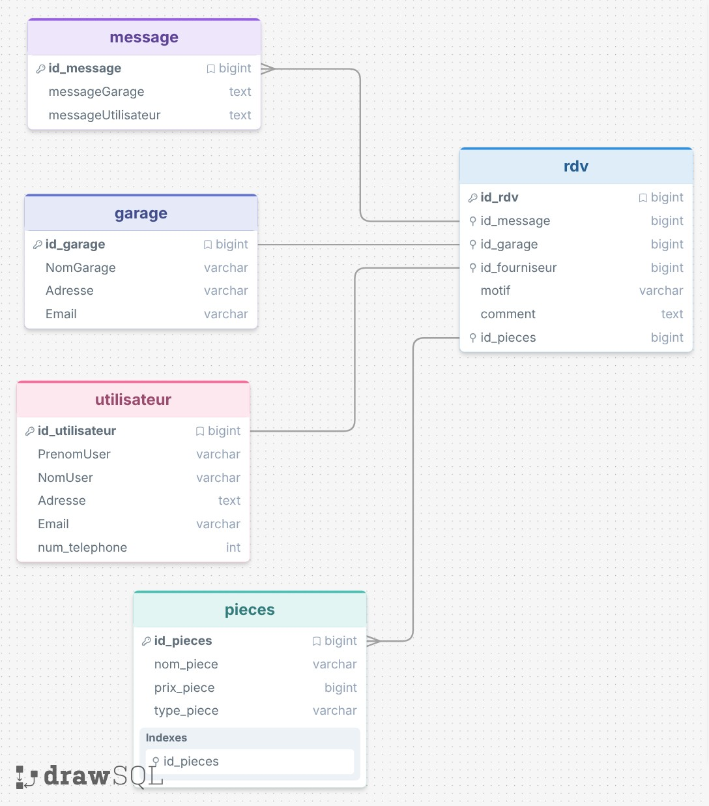

GarageMoto
Application de gestion complète pour garage moto — Clients, rendez-vous, réparations et messagerie interne — Projet BTS SIO SLAM

Captures d'écran
Modélisation de la base de données
À propos
GarageMoto est une application de gestion complète pour garage moto développée en Java avec JavaFX. Elle couvre l'ensemble des besoins opérationnels d'un garage : enregistrement des clients, planification des rendez-vous, suivi des réparations avec gestion des pièces détachées, et communication interne entre employés.
Développée dans le cadre du BTS SIO (Services Informatiques aux Organisations), spécialité SLAM — Solutions Logicielles et Applications Métier.
Fonctionnalités
Gestion des clients
- Création de fiches clients : nom, prénom, email, téléphone, adresse postale
- Modification et suppression avec confirmation
- Tableau interactif (
TableView) avec tri, filtrage et recherche rapide
Gestion des rendez-vous
- Planification avec association client automatique, choix date/heure et type de réparation
- Ajout de commentaires et motifs de visite
- Historique complet des rendez-vous passés et futurs
- Modification et annulation de rendez-vous
Réparations et pièces détachées
- Enregistrement des pièces : référence, désignation, type, prix unitaire
- Suivi des coûts de réparation en temps réel
- Traçabilité complète des pièces utilisées par réparation
- Statistiques et rapports sur les interventions
Messagerie interne
- Zone de messages pour la communication entre employés du garage
- Notes et points importants à documenter
- Notifications d'alertes pour l'équipe
Interface utilisateur
L'application propose 5 écrans principaux construits avec JavaFX + FXML : connexion, gestion des clients, rendez-vous, réparations et messagerie interne. Les interfaces utilisent un thème CSS personnalisé, des tableaux interactifs avec tri et filtrage, ainsi qu'une validation des formulaires en temps réel.
- Thème cohérent avec CSS personnalisé
- Boutons d'action clairs : Ajouter, Modifier, Supprimer, Enregistrer, Annuler
- Navigation au clavier
- Gestion des rôles :
ADMIN,MECANICIEN,RECEPTION
Architecture
Le projet suit le pattern MVC + DAO (Model-View-Controller + Data Access Object), assurant une séparation stricte des responsabilités entre la vue FXML, les contrôleurs d'événements et la couche d'accès aux données.
- Vue — fichiers FXML + CSS : définition déclarative des interfaces
- Contrôleur — classes annotées
@FXML: gestion des événements et logique de présentation - Modèle — classes métier :
Client,RendezVous,Piece,Reparation,Utilisateur - DAO — abstraction de la base de données :
ClientDAO,RendezVousDAO,PieceDAO… - Singleton pour la connexion MySQL via
DatabaseConnection.java - ObservableList JavaFX pour la mise à jour automatique des tableaux
Base de données
La base MySQL repose sur 5 tables principales avec intégrité référentielle et gestion des rôles :
utilisateur— authentification avec rôles (ADMIN, MECANICIEN, RECEPTION), mots de passe hachésclient— fiches clients avec coordonnées complètesrendez_vous— planification avec clé étrangère clientreparation— interventions liées aux rendez-vouspiece— catalogue de pièces avec prix et traçabilité par réparation
Modèle Physique de Données
La base de données a été conçue avec la méthode Merise (MCD → MLD → MPD). Le MPD définit l'ensemble des tables, clés primaires, clés étrangères et contraintes d'intégrité du système de gestion du garage.
- Table
utilisateur— authentification avec rôles (ADMIN,MECANICIEN,RECEPTION), mots de passe hachés - Table
client— fiches clients avec coordonnées complètes - Table
rendez_vous— planification avec clé étrangèreclient - Table
reparation— interventions liées aux rendez-vous - Table
piece— catalogue avec prix unitaire et traçabilité par réparation - Contraintes
CASCADEsur les suppressions pour l'intégrité référentielle - Respect de la 3NF — dépendances fonctionnelles directes

MPD — modélisation Merise de la base de donnéesTechnologies utilisées
| Composant | Technologie | Version |
|---|---|---|
| Langage | Java | JDK 17+ |
| Interface graphique | JavaFX + FXML | 21+ |
| Base de données | MySQL | 8.0+ |
| Connecteur BD | MySQL JDBC Connector | 8.0+ |
| Build & dépendances | Maven | 3.6+ |
| Tests unitaires | JUnit | 4.13.2 |
| Versionning | Git | — |
Compétences mobilisées
- Développer une application de gestion métier en Java orientée objet
- Concevoir et implémenter une interface graphique avec JavaFX et FXML
- Appliquer le pattern MVC couplé au pattern DAO pour la séparation des couches
- Modéliser et manipuler une base de données relationnelle MySQL (MCD, SQL complet)
- Gérer l'authentification avec rôles et hachage des mots de passe
- Utiliser Maven pour la gestion des dépendances et du cycle de build
- Rédiger des tests unitaires avec JUnit
- Versionner un projet avec Git et GitHub